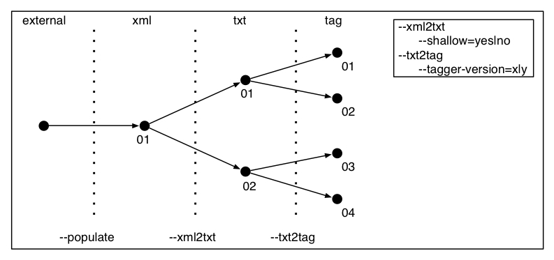

This documents descirbes the general design of the batch processing scripts that start with "step".
This file contains the specifications for the pipeline. There is a default version in config/pipeline-default.txt, but another version can be handed into step2_document_processing.py with the "--pipeline ID" option, where the default is 'default'. Alternative pipeline scripts are expected to be in the config directory. The pipeline config file is a list of the four processing stages where each stage is associated with a couple of options. Here is an example:
--xml2txt --txt2tag --tag2chk section-filter=off --pf2dfeats version=v0.2
In general, each processing step is followed by a list of feature-value pairs, separated by whitespace. Many command line options for step2_document_processing will be feature-value pairs in this config file. Many more options can/should be added like chunk-rules, tagger-version, etcetera. the version option tells hands requirements on the git commit to the processing scripts. Version requirements are coarse-grained and are only enforced at the tag level not at the git commit level. With the expample above, the system will not require that the commit is exactly the commit with tag=v0.2, rather, it specifies that the result of git-describe should start with 'v0.2'.
The configuration file specifies a processing chain. A processing chain is associated with a set of datasets, where each data set corresponds to the output of a processing step. The pipeline configuration uniquely identifers input and output datasets for each processing step. The feature logic is as follows. If a feature like section-filter=off or section-filter-off is specified, then there has to be an exact match of the configuration element with the data set. If no features are specified, the dataset cannot have a feature specified. For example, with the config file above, the dataset created by the --tag2chk processing step would have to exactly match section-filter=off.
Open issues:
Assuming a directory TARGET_DIR/LANGUAGE, which we will here abbreviate as 'en', we have two subdirectories, 'config' and 'data'. The 'config' directory contains configuration settings that pertain to the entire data set. It has the following files:
en/config/files.txt en/config/general.txt en/config/pipeline-default.txt en/config/testing-files-0000000-0005000.txt en/config/training-files-0000000-0005000.txt
The first contains a list of paths pointing to external files, the second has general configuration settings (sources, target directory, initialization timestamp, etcetera), the third has the default pipeline, and the fourth and fifth default file sets for training and testing (these are initialized to the first 500 paths in files.txt). In en/data we have subdirectories that store data created by processing steps (the datasets). They are grouped thematically and numbered using prefixes (here only the ones relevant to document-level processing are listed, there are also directories with prefix 't' and 'o' for technology tagging and ontology building):
en/data/d0_xml en/data/d1_txt en/data/d2_seg en/data/d2_tag en/data/d3_phr_feats en/data/d3_phr_occ en/data/d4_doc_feats en/data/workspace
For the document processing phase, there is subdirectory for each data type, with data types for the xml source, document structure representaiton, segmented data (Chinese only), tagged data, and chunked data with various feature sets. All the subdirectories listed above, except for workspace, contains datasets where each dataset is in a numbered directory that reflects the dataset identifier (which is unique for each data type, not unique accross datatypes. These have a substructure that is the same for all. Here is the example for the d2_tag/01:
en/data/d2_tag en/data/d2_tag/01 en/data/d2_tag/01/config en/data/d2_tag/01/config/pipeline-head.txt en/data/d2_tag/01/config/pipeline-trace.txt en/data/d2_tag/01/files en/data/d2_tag/01/state en/data/d2_tag/01/state/processed.txt en/data/d2_tag/01/state/processing-history.txt
A data set is defined by a configuration and state and implements the output of a processing stage for a particular pipeline configuration. A dataset configuration consists of a trace and a head, where the head contains the options for the processing step creating the current data type (the datatype of the dataset) and the trace the options for all previous stages. This design saves space since different pipelines may share components, as illustrated below.
In a way, these identifiers implement a tree where each path to the leaves corresponds with a pipeline configuration, in the example above we use a simple partial pipeline with one two-valued option for each processing step. Some steps inherently do not have any options (most notable the --populate step which simply copies an external file into the data area). As mentioned above, config and state define a dataset, we now describe the the relevant files in the config and state directories. In general, the config director contains fixed settings whereas the state directory contains things for the data set that change over time.
It is not possible to simply use the config/pipeline-X.txt to define the configuration of a data set since a data set can match more that one pipeline configuration (pipelines with the same trace and head, but with differences after the head). Also note that for --xml2txt the trace is always empty.
The en/data/d2_tag/01/files directory will be empty at initialization but will be filled at processing time with arbitrarily deep sub paths.
The data set d0_xml is special in the sence that it contains copies of external files (keeping track of many it has) and that versioning makes no sense. So, in all cases, there is only one subdirectory in en/data/d0_xml.
NOTE: this section is out-of-date.
Input: target directory, language, limit.
Processing steps:
Input: target directory, language, limit, stage identifier, options.
The first step is to find the input data set (here using --txt2tag as an example)
The second step is to find the output data set.
The third step is to check whether the input data set has enough processed documents to meet the limit requirement given the processing state on the output data set.
input.processed > output.processed + limit
Need version of stanford tagger in config?
Need to get rid of absolute path in xml2txt. This is probably just used by Peter and would be solved with properly setting up the document structure parser as a submodule.
The existence of a data set is no guarantee that the ... (or is it?)
Could probably deal with the segmentation for Chinese by adding d2_seg as an output for txt2tag and dealing with the extra data set for Chinese,
Need to implement the versioning requirements.